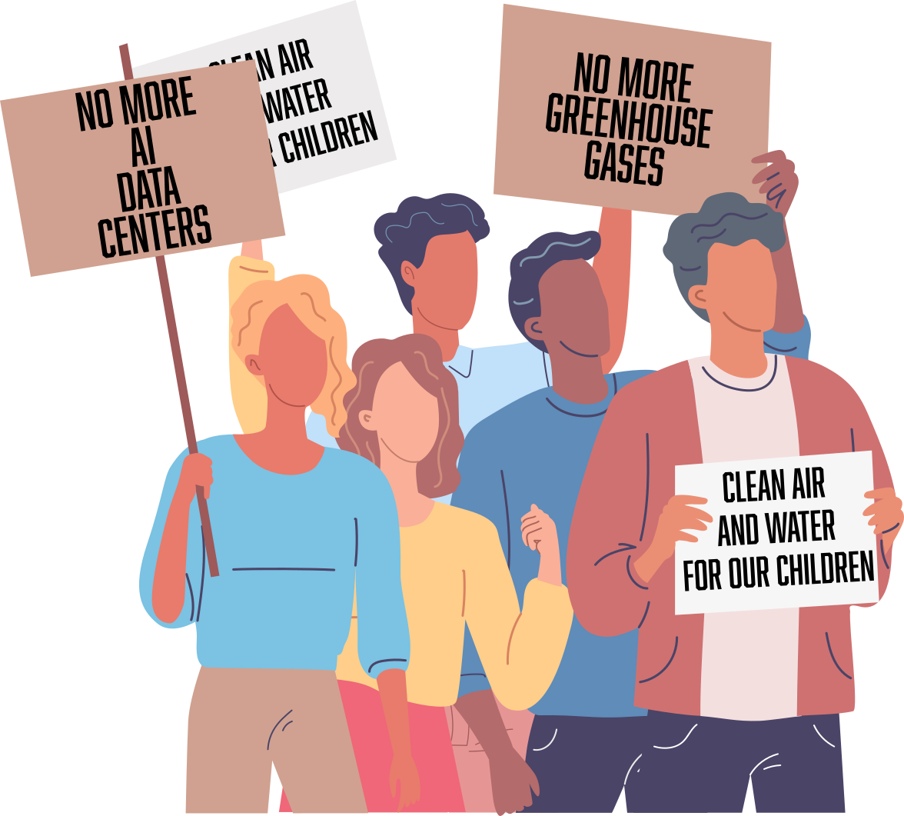

Cold Comfort
Data Centers, Climate Change, and the Cost of Staying Cool
by Meaghan Horner
Scroll for more...↓
New York currently has a 1-year data center moratorium, but I was curious about where we might be headed if that moratorium ended. I turned my sights to Virginia, the state leading the country in data center construction.
Data Center Alley
Dubbed "Data Center Alley", Virginia has more than twice as many data centers as Texas, the state with the next highest total.
Virginia Has More Data Centers Than Any Other State
Map of Count of Planned and Built Data Centers Across US
Hover for detailed information
In Virginia, electricity is provided by Dominion Energy. Dominion Energy operates as part of PJM Interconnection, a regional transmission organization (RTO) that coordinates the flow of electricity across all or part of 13 states plus Washington, DC.
Operating an electricity grid across a large area allows PJM to compensate for electricity needs throughout the entire region, making brownouts less likely in cases of high localized demand. On the other hand, it means that a dramatic increase in power use in one state — like in Virginia, from data centers — affects all states in the network, even those without data centers.
PJM operates a specialized "capacity market" - an annual auction where utilities pay power plants to guarantee they can deliver backup power during times of peak demand. In PJM's latest auction, those wholesale prices skyrocketed from $29/MW-day to roughly $330/MW-day — a tenfold increase — in just two years. If you’re wondering how this will affect your wallet, stay tuned - we’ll get back to that.
Data Center Power Demand in Virginia is projected to grow
Dominion Energy, the energy provider for Virginia, expects that data center coincident peak demand — the power that is demanded at a single moment — will quadruple over the next 20 years, from about 4GW in 2025 to 16.6 GW in 2046.
Dominion Energy Expects Data Center Power Demand To Quadruple By 2046
Forecasted coincident peak demand (in GW) for data centers in Dominion Energy's service territory
PJM's demand prediction does not account for hotter summers
Needed Energy Capacity Projected To Grow Significantly
Peak July electricity demand, past and projected, in megawatts
Between 2015 and 2023, when Chat GPT became the first widely-used LLM tool, demand for electricity in the PJM service area stayed relatively flat.
Since 2023, however, LLM tools and the data centers powering them have sent pwer companies and distributors scrambling to keep pace. PJM has estimated the demand growth over the next 20 years if all the planned data centers are built, and the numbers are stark.
Although PJM can currently meet capacity demand, which peaked in 2026 at roughly 160,000 megawatts, will it be able to meet 2033 demands of at least 200,000 megawatts?
More striking still is that PJM uses for its demand predictions weather from the past 30 years, rather than NOAA predictions about the next 30 years.
If we instead use NOAA forecasts to plot what summers might look like under two likely climate change scenarios, known as RCP 4.5 and RCP 8.5, we see the picture is very different.
PJM describes their weather assumptions as follows, in their own internal document:
The 2025 Long-Term Load Forecast uses historical weather data from 1993 to 2023 as the basis for constructing forecasts. No explicit assumption is being made about Climate Change, and thus the assumption is that future weather will resemble past weather.
With power demands set to boom, is the grid able to handle it?
Power plants built in the 1950s and 60s may reach their end of life soon, especially given that the average lifespan of a coal or natural gas power plant is around 55 years. New power plants are currently under construction, with planned completion dates within the next decade, but fewer are being built than in the 2000s, when power demand was nowhere near as high as it's projected to be.
Without a herculean effort, there is no way to power the incoming wave of data centers while also meeting the existing needs of the PJM service area.
Power Plant Construction Remains Flat Despite Forecasted Energy Crunch
Distribution of power plant capacity in megawatts across PJM Interconnection by decade built and fuel source, split by operating versus planned facilities
So We Need More Power Plants?
Although it might seem like the obvious solution, building more power plants is far from a panacea. Plants built which use fossil fuels risk sending us further into a viscious circle where we burn fossil fuels to keep cool, warming the planet and forcing us to burn more fossil fuels to keep cool...
So what does this mean for your wallet?
Greenhouse gases aren’t the only thing spiking as data centers gobble up power grid capacity. Remember that PJM capacity auction where the price shot up from $29 to $330 per megawatt-day? You may not be feeling the full brunt of it yet — but you will.
In most states, utilities must file rate adjustments with regulators first, delaying the impact to consumers. But in deregulated markets like New Jersey and Washington, D.C., consumer rates adjust almost automatically, triggering sharp, immediate price spikes.
New Jersey and D.C. are the canaries in the coal mine for price hikes that will inevitably ripple out across the rest of the PJM grid.
Some lawmakers have introduced bills requiring data centers to ‘pay their own way’ for the new grid capacity they require, but until those become law, the bill for powering the cloud is headed straight for your mailbox. And even as PJM denies that summers are getting hotter, your electricity bill is telling a different story.
New Jersey and Washington, D.C. Lead The Way in Price Hikes
Increase in Price per kWh since 2001 for States Served by PJM
What to do? Take action in your community
- Encourage your lawmakers to support bills that make data centers provide their own electricity so costs aren’t passed on to consumers
- Vote for and support politicians enacting moratoriums on new data centers
- Fight against data centers in your backyard - check out http://brockovichdatacenter.com to find out if a data center is being built near you and to find out about community actions against it
- Demand that any new power plants in your community run on renewable resources like hydro, solar, and wind power so that the power grid can adapt to growing demand without producing more greenhouse gases
